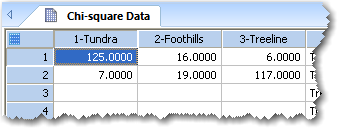
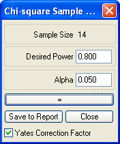
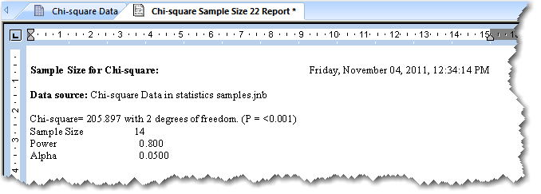

Determining the Minimum Sample Size for a Chi-Square Test
| Group | Categories | ||
| Category 1 | Category 2 | Category 3 | |
| Group 1 | 15 | 15 | 35 |
| Group 2 | 15 | 30 | 10 |
The sample size for a chi-square analysis contingency table is determined by the estimated relative proportions in each category for each group. Because SigmaPlot uses numbers of observations to compute these estimated proportions, you need to enter a contingency table in the worksheet containing the estimated number of observations before you can compute the estimated proportions.
To find the sample size for a Chi-square test:
-
Enter a contingency table into the worksheet by placing the
estimated number of observations for each table cell in a corresponding
worksheet cell.
Figure 1. Contingency Table Data Entered into the Worksheet The worksheet rows and columns correspond to the groups and categories. The number of observations must always be an integer.
Note that the order and location of the rows or columns corresponding to the groups and categories is unimportant. You can use the rows for category and the columns for group, or vice versa.
- Select the Analysis tab.
-
In the SigmaStat group,
select:
The Select Data panel of the Test Wizard appears.
Figure 2. The Select Data Panel of the Test Wizard 
- Select the columns of the contingency table from the worksheet as prompted.
-
Click Finish when you have
selected all three columns.
The Chi-Square Sample Size dialog box appears.
Figure 3. The Chi-square Sample Size Dialog Box  - Enter the desired power, or test sensitivity. Power is the probability that the chi-square test will detect a difference in observed distribution if there really is a difference. The closer the power is to 1, the more sensitive the test. Traditionally, you want to achieve a power of 0.80, which means that there is an 80% chance of detecting an difference with 1– α confidence (for example, a 95% confidence when α = 0.05).
-
Enter the desired alpha level. Alpha (α) is the acceptable
probability of incorrectly concluding that there is a difference. The
traditional α value used is 0.05. This indicates that a one in twenty chance of
error is acceptable, or that you are willing to conclude there is a significant
difference when P < 0.05.
Smaller values of α result in stricter requirements before concluding there is a significant difference, but increase the possibility of concluding there is no effect when one exists (a Type II error). Larger values of α make it easier to conclude that there is a difference, but also increase the possibility of concluding there is an effect when none exists.
- Click = to see the required sample size for a Chi-Square test at the specified conditions. The sample size calculation appears at the top of the dialog. If desired, you can change any of the settings and click = again to view the new sample size as many times as desired. However, if you want to change the number of observations per category, you need to select Close, edit the table, then repeat the sample size computation.
-
Click Save to Report to save the
sample size computation settings and resulting sample size to the current
report.
Figure 4. The Chi-square Sample Size Computation Results Viewed in the Report  - Click Close to exit from Chi-Square test sample size computation.